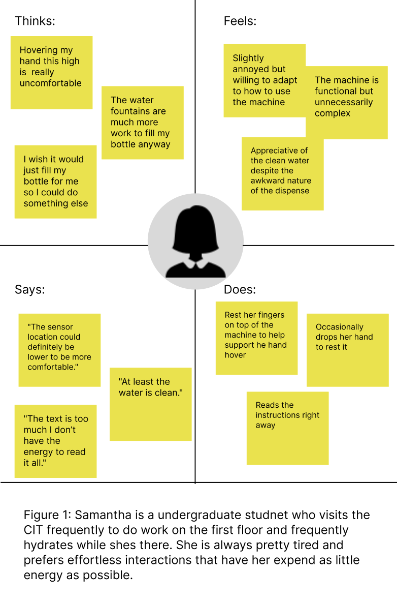

Hello, I'm Yabeke Zike!
I'm a frontend engineer and designer excited about
creative problem sovling and accessible design
Incoming Software Engineer @ Bloomberg
Previously Frontend Engineer @ CompSciLib
Gradutaing senior @ Brown University
Personas & Stroyboarding
The Objective:
Through analyzing a popular water dispenser in a university building, that is majorly controversial in its design, I aimed to understand what indivuals liked and disliked when it came to this interface. Through this I was hoping to learn more about what indivuals prefered within interfaces as well as how to integrate these needs and understand the importance of them when creating interfaces.
My Role:
As a individual project, I chose to observe user behavior with a interface, conduct interviews, and summarized observaions into personas and storyboards. This project assited in helping me learn the human rooted nature that interfaces must be attentive to in order to accurately serve their purpose and serve users.
The Process and Results:
This process was broken into three parts:
1: Choose an interface to observe user interactions and conduct interviews
2: Create personas based on these observations and interviews
3: Utilized one of my personas in order to create a user stroyboard interaction
Part 1: Interface Observation and Interviews
The public interface I chose to observe was the water dispenser in the kitchen on the 4th floor of the CIT at Brown University. This dispenser is infamous within the CIT and to those who frequently visit the building and a sketch of it can be found below. I then observed users natually interacting with this interface and interveiwed them asking various questions regrading their experience.
Interface Sketch:

Sumarized notes from user interviews:
- Interfaces has unintuitive nature with its excessive signage and misleading indications.
- Having to hover their hands over the sensor was inconvenient and uncomfortable
- Blocks of text pasted on the dispenser that indicate how to use the machine itself
- Dispensed clean and good-tasting water from this dispenser
Part 2.1: User Personas
Using the observations and interviews answers from the interviews tab, I constructed two different personas based on the most common answerws and experince with the interface. I do this using a four quadrant empathy map where I describe what each person would think, feel, do, or say while interacting with this interface but in different scenarios.
Persona #1:
Persona #2:
Part 3: Storyboarding
Here I created a stroyboard for one of my personas (James) in which I drew and annotaed frames to describe this users journey from start to finish. Through this I hoped to provide more insight to what it is like for this user to get water from the dispenser. Furthermore, I modeled thier emotions and thoughts throughout the process as well as all the steps taken to complete the process in order to provide more context to this experience.
Storyboard:
Conclusion:
Through this project, I was able to observe and interview users to learn more about thier interactions with interfaces then translate those insights into clear visual representations—like personas and storyboards—that capture user goals, and experiences. From this I gained skills surrounding user focus when it comes to interfaces when it comes to making things easy, intutitive, and simple for users.